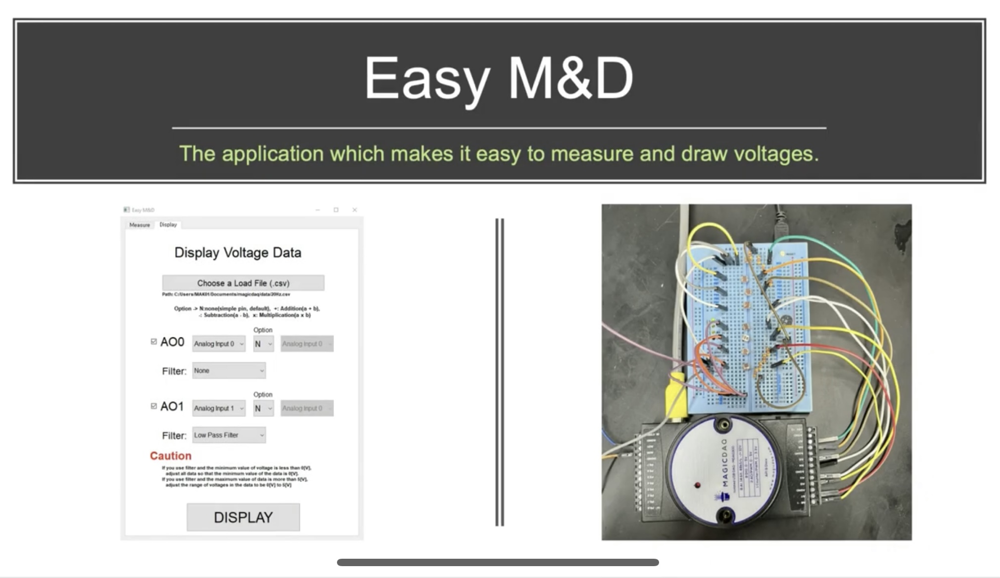

EasyM&D
Python
MagicDAQ
I worked on the development of Open-source software which makes it easy to measure and draw voltages by MAGICDAQ as an exchange student at KAIST.
KAISTの研究留学で電圧の測定、描画を容易に実行ができるシステムとUser Interfaceの開発に取り組みました。

QuickBuzz
Arduino
Prototype that enables communication while moving the body, developed in "Prototype UX" class at Tokyo Tech. I completed the implementation part from scratch by myself.
東工大の"Prototype UX"の授業で開発した体を動かしながらコミュニケーションが取れるプロトタイプです。実装の部分を全て一人で完成させました。
My Pictures (JP ver)
Canvas(HTML5)
Javascript
2D RPG browser game developed at the traP hackathon. The main development was completed in 10 days. The feature of this game is that you create and train your own character and conquer the dungeon.
traPのハッカソンで作成した2DのRPGゲームです。主な開発を10日で完成させました。キャラクターを自分で作成して育成し、ダンジョンを攻略するのが特徴です。
Squares
Canvas(HTML5)
Javascript
2D action browser game in which you aim for the goal without getting hit by enemies. There are stages with different difficulty levels. It is quite difficult, so if you are confident, please try it (^^)
敵に当たらないようにゴールを目指す2Dアクションゲームです。難易度別にステージがあります。かなり難しいので自信のある方はどうぞ(^^)
Yomeru-Kun
OpenCV.js
At the Diji-con hackathon, I created a software with my friends that detects the frame edges of a comic book using OpenCV and automatically converts it into a web comic layout.
Diji-con ハッカソンで漫画のコマ縁をOpenCVを用いて検出し自動的にウェブ漫画のレイアウトに変換するシステムを作りました。
ARTOU
P5.js
GUI that generates interactions on the web. I was interested in Creative Coding and tried it.
ウェブ上でインタラクションが発生するGUIです。Creative Codingに興味がありやってみました。
AR Shooting Game
C#
LocationBaseAR
Unity
An exploratory AR game I created as an intern at ColiSite. I was in charge of the game throwing part of the development on AR.
ColiSiteのインターンで作成した探索型ARゲームです。開発のAR上でのゲーム投げの部分を担当しました。